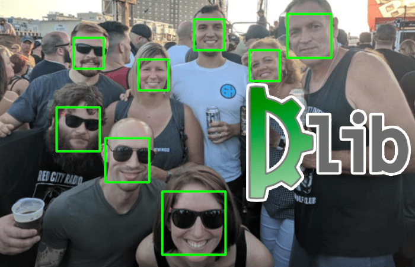

Face detection usando la libraria DLIB:
Foto generale:

in questo esempio si può acquisire il frame con il tasto k.per fermare il programma si usa il tasto q.
Scarica il codice Qui
Passaggi per far funzionare il programma:
- Creare l'ambiente virtuale.
Non sai come creare un ambiente virtuale? Clicca qui
- Scaricare le librerie necessarie.
- Avere la webcam attaccata al pc.